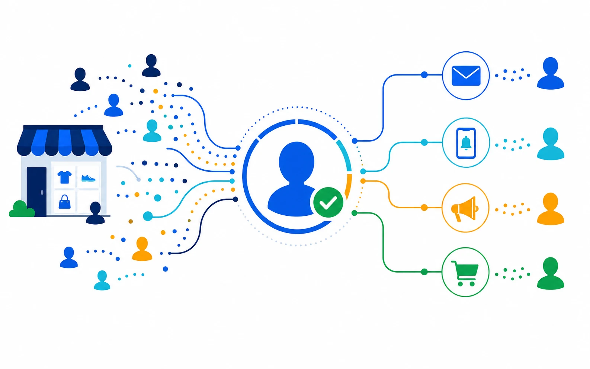

Reconnect people researching high-value categories or products.
B2C products and services
Recognize interest.
Reconnect the journey.
Turn anonymous product and service research into known, governed audiences for lifecycle, media, and one-to-one marketing.

Recognizeidentify valuable product or service research
Contextualizeunderstand category, recency, and engagement
Reconnectcoordinate lifecycle and media audiences
Close the loopconnect digital identity to location-aware action
Beyond the abandoned cart
Not every valuable journey reaches checkout.
MyProspects helps B2C teams recognize research across product, service, comparison, and location pages, then choose a relevant next action.
- Resolve cookieless traffic. Build person-level context beyond a single browser session.
- Use journey intent. Distinguish casual browsing from focused evaluation.
- Activate across channels. Keep audience rules consistent across lifecycle, media, and local outreach.
Build audiences around comparison, eligibility, and location intent.
Reach individuals when they visit locations of interest.
The B2C workflow
From anonymous browse to relevant engagement.
Capture interest
Observe meaningful category and service behavior.
Resolve identity
Connect visits into a persistent person profile.
Build audience
Apply recency, value, and consent criteria.
Coordinate reach
Sync lifecycle, media, and local activation.
Controlled relevance
Make the next message more useful, not more intrusive.
Use broad journey context and explicit frequency, consent, and suppression rules across every activation destination.
No. It adds person-level identity and activation context to the aggregate insight you already use.
Yes. Audience rules can support digital destinations and location-aware one-to-one marketing workflows.
Use shared frequency, ownership, consent, and exit rules before an audience reaches any channel.
Reconnect the journeys your forms never captured.
Test one high-value audience against a clear engagement path.